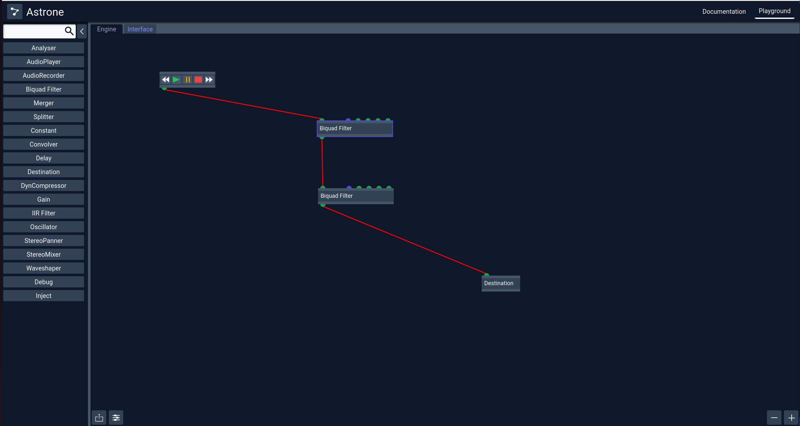
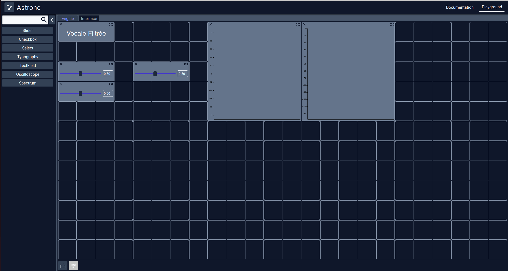

Créer vos propres applications audio-interactives
Combinaisons de briques élémentaires de traitements
Combinaisons de widgets interactifs
Partager vos applications avec la communauté
Exporter/Importer vos projets
Création d'une bibliothèque de projets
Accessible en ligne
Un outil commun à la recherche et la clinique